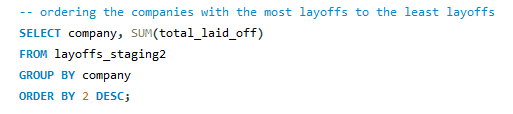
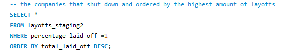
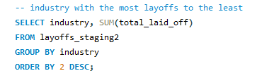
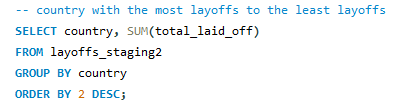
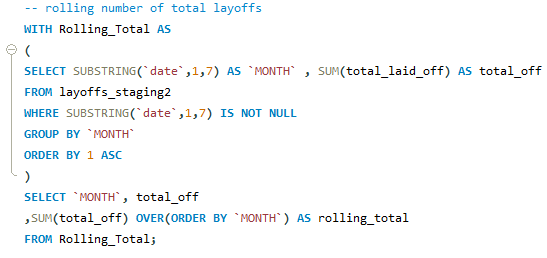

Exploratory Data Analysis of a Global Layoff Dataset
Overview:
This project focused on performing exploratory data analysis (EDA) on a cleaned dataset of global layoffs using SQL. The dataset included key details about layoffs from companies across various industries and countries, such as the number of employees laid off, the percentage of the workforce affected, and the dates of the events. The primary goal was to uncover patterns and trends to better understand the global impact of layoffs on businesses.
Click here to view my exploratory analysis of the dataset
Key Insights:
- Largest Layoffs:
- Amazon led the layoffs, with a total of 18,150 employees laid off across various locations, primarily within the Retail industry.
- The highest layoff percentage recorded was 100%, seen in companies like Katerra and Butler Hospitality, which fully shut down their operations.
  - Top Industries Affected:
- The Consumer and Retail industries were significantly impacted, with major contributors like Amazon, Google, and Meta accounting for over 40,000 layoffs.
- The Consumer industry saw over 45,000 layoffs, while the Retail industry recorded over 43,000 layoffs.
 - Company-Specific Patterns:
- Uber experienced layoffs across multiple countries, including the United States, Netherlands, India, and Lithuania, with reductions ranging from 3% to 25% of their workforce at different locations.
- Companies like Airbnb and Lyft also faced significant layoffs, particularly during the peak of the pandemic in 2020.
- Country-Level Impact:
- The United States bore the brunt of the layoffs, with over 250,000 employees laid off across various industries.
- Other heavily affected countries included India, Netherlands, and Sweden, each experiencing notable workforce reductions.
 - Temporal Patterns:
- Layoffs spanned from 2020 to 2023, with the highest number occurring in 2022, totaling over 160,000 employees as companies adjusted post-COVID-19.
- January 2023 was particularly hard-hit, with over 80,000 layoffs in that month alone, reflecting continued workforce adjustments stemming from the pandemic's economic aftermath.
- Rolling Total Analysis:
- A rolling total analysis revealed a consistent increase in layoffs from February 2022 to February 2023, with a cumulative total of 157,000 employees laid off by mid-2022.
 - Layoff Trends by Company Stage:
- Post-IPO companies accounted for the largest number of layoffs, contributing nearly 40% of the total layoffs.
- Early-stage companies, particularly those in the Series B funding stage, also faced considerable layoffs, likely due to difficulties raising funds.
- Layoffs by Workforce Size:
- Smaller companies (those with fewer than 500 employees) experienced higher layoff percentages, with 20% of these companies laying off more than 10-15% of their workforce. Larger companies typically laid off 10-15% of their workforce.
Techniques Used:
- Grouped data by company, industry, and country to identify the most affected entities.
- Applied SQL window functions to calculate rolling totals and examine layoff trends over time.
- Extracted date components (year, month) to analyze layoffs by time period.
- Grouped data by company stage to explore trends across different growth phases.
This exploratory analysis provided valuable insights into global layoff trends, highlighting key patterns across industries, countries, and companies that were most affected.